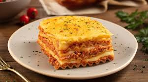

Lasagna

Description
Lasagna, this richly layered dish swimming in sumptuous tomato sauce, made its debut in Naples, Italy, during the Middle Ages.
In this occasion, I will be teaching you how to make an original made-from-scratch lasagna.
We will be making the tomato and bechamel sauce, and the pasta dough, everything from SCRATCH!
Ingredients
- 600 g veal meat
- 300 g bacon
- 1 onion
- 2 carrots
- 1 celery stick
- 200 ml red wine
- 800 g peeled tomatoes
- 50 ml milk
- 3 tbsp olive oil
- Salt to taste
- Grounded black pepper to taste
Pasta
- 200g flour
- 2 eggs
- 1-2 tbsp olive oil
- a pinch of salt
Bechamel sauce
- 80 g butter
- 80 g flour
- 750 ml milk
- Nutmeg to taste
- Salt to taste
- Grounded black pepper to taste
- 200 g parmesan cheese
Step by step
Meat sauce (Ragu)
- Cut the bacon in brunoise.
- Cook the bacon in medium heat.
- Cut the vegetables in brunoise as well.
- Add a dash of olive oil, to the pan where we are cooking the bacon.
- Add the vegetables
- Add a pinch of salt
- Cook the onion, th carrots and the celery over lower heat, until they are soft.
- Add the veal meat
- Cook over high heat and stir it well
- Once the meat changes the color, add a glass of red wine
- Cook until the alcohol has evaporated
- Add the peeled tomatoes
- Once the sauce starts to boil, change to lower heat. Let it cook for 2 hours (add water if needed)
- Add a pinch of grounded black pepper
- Add milk to rectify acidity.
- The sauce is ready!!
Homemade dough
- On a bowl, sift the flour.
- Add a pich of salt.
- Add 2 eggs.
- Add a dash of olive oil.
- Stir it well.
- Do not knead the dough too much, you just need to integrate te ingredients.
- Let it rest for at least 20 minutes.
- Roll ot the dough with a rolling pin.
- The ideal width of the dough is when it starts to become transparent.
- Cut the dough in layers of 10x12 cm. You will obtain at least 17 layers.
- Cook them well in salty water, don't add them all at once!!
- ONce cooked, place them on a cloth to dry them.
Bechamel sauce
- Melt the butter.
- Add the flour.
- Stir them well and gently for about 2-3 minutes.
- Add the cold milk and stir it at high heat, gently.
- You have to stir all the time, gently, until it's cooked.
- Once it starts boiling, cook it for 2-3 more minutes and remove from the fire.
- Add salt and pepper.
- To prevent crust from forming you can cover it with plastic wrap.
FINALLY!!
- Preheat the oven to 180C or 360C.
- Grease the mold with butter.
- Cover the bottom with a layer of bechamel sauce.
- Add pasta layers.
- Add a layer of meat sauce (Ragu).
- Add bechamel sauce.
- Add grated parmesan cheese.
- Repeat the steps, add pasta layers, ragu, bechamel and parmesan cheese, until you reach the top.
- Cover the last layer with bechamel and parmesan.
- Bake it for 45 minutes.
- Let it rest for 15 minutes before serving.
- Enjoy!!!